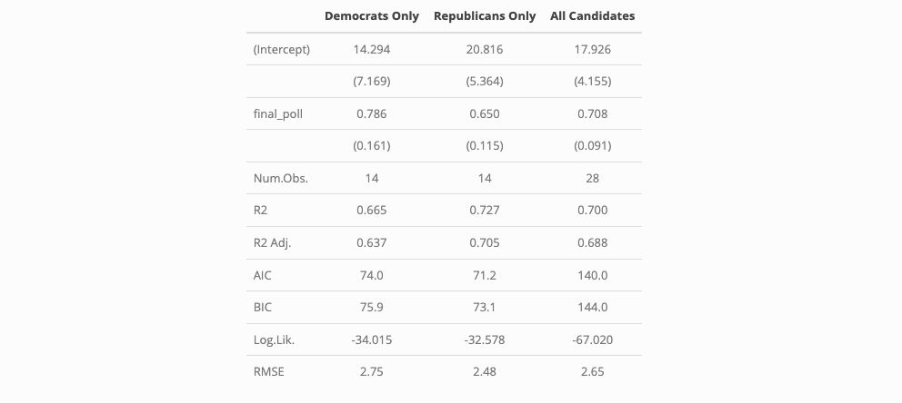

In this week’s post, we focus on analyzing polling data, attempting to understand how they can best predict election outcomes. My thanks again to Matthew Dardet for his generous starter code.
For the purpose of this analysis, we looked at polling data from the 2020 election (sourced from FiveThirtyEight). While election forecasting might benefit from more data, we reference 2020 here for simplicity. We began by visualizing the available data, helping us understand existing patterns.
## ── Attaching core tidyverse packages ──────────────────────── tidyverse 2.0.0 ──
## ✔ dplyr 1.1.4 ✔ readr 2.1.5
## ✔ forcats 1.0.0 ✔ stringr 1.5.1
## ✔ ggplot2 3.5.1 ✔ tibble 3.2.1
## ✔ lubridate 1.9.3 ✔ tidyr 1.3.1
## ✔ purrr 1.0.2
## ── Conflicts ────────────────────────────────────────── tidyverse_conflicts() ──
## ✖ dplyr::filter() masks stats::filter()
## ✖ dplyr::lag() masks stats::lag()
## ℹ Use the conflicted package (<http://conflicted.r-lib.org/>) to force all conflicts to become errors
## Loading required package: Matrix
##
##
## Attaching package: 'Matrix'
##
##
## The following objects are masked from 'package:tidyr':
##
## expand, pack, unpack
##
##
## Loaded glmnet 4.1-8
##
## Rows: 7378 Columns: 9
## ── Column specification ────────────────────────────────────────────────────────
## Delimiter: ","
## chr (3): state, party, candidate
## dbl (4): year, weeks_left, days_left, poll_support
## lgl (1): before_convention
## date (1): poll_date
##
## ℹ Use `spec()` to retrieve the full column specification for this data.
## ℹ Specify the column types or set `show_col_types = FALSE` to quiet this message.
 This data shows that polling averages shift over the months before the election, perhaps being affected by events that happened during the election cycle. For example, we see a substantial decline in support for Donald Trump around June 2020 - perhaps corresponding to the murder of George Floyd (1).
This data shows that polling averages shift over the months before the election, perhaps being affected by events that happened during the election cycle. For example, we see a substantial decline in support for Donald Trump around June 2020 - perhaps corresponding to the murder of George Floyd (1).
However, it is interesting to see if election forecasts made using polling data in the few weeks prior to the election are necessarily more predictive of the final outcomes than prior weeks. Some, such Tien and Lewis-Beck, claim that “short-view forecasts,” which solely rely on polling data, especially in the weeks prior to the election, tend to be inaccurate (2).
To test the accuracy of November polls, we computed several regressions of November polling averages on actual election outcomes between 1968 and 2020 (we have data as early as 1948, but we drop earlier years given that we do not have polling data from FiveThirtyEight). I calculated three separate regressions, highlighted in the table below, which model predictions for only Democratic candidates, only Republicans, and both parties.
## Rows: 40 Columns: 9
## ── Column specification ────────────────────────────────────────────────────────
## Delimiter: ","
## chr (2): party, candidate
## dbl (3): year, pv, pv2p
## lgl (4): winner, incumbent, incumbent_party, prev_admin
##
## ℹ Use `spec()` to retrieve the full column specification for this data.
## ℹ Specify the column types or set `show_col_types = FALSE` to quiet this message.
## save_kable will have the best result with magick installed.

Given that the Republican only model has an R^2 value of 0.727 while the Democrat only model has an R^2 value of 0.665 (with the combined model being in between), it appears that polling data from FiveThirtyEight has, on average, been more predictive of Republican outcomes. However, I also wanted to see if the relationship may have been skewed by earlier polling data, which was likely less accurate.
## Warning: Width not defined
## ℹ Set with `position_dodge(width = ...)`
 This scatterplot, which includes a line demonstrating perfect poll prediction, shows that November polls often underpredict candidate performance. This led me to calculate the years/candidates with the lowest November prediction error.
This scatterplot, which includes a line demonstrating perfect poll prediction, shows that November polls often underpredict candidate performance. This led me to calculate the years/candidates with the lowest November prediction error.
| year | party | candidate | pv2p | final_poll | pred_error |
|---|---|---|---|---|---|
| 2012 | REP | Romney, Mitt | 48.08474 | 47.74572 | -0.3390220 |
| 2020 | DEM | Biden, Joseph R. | 52.26986 | 51.84996 | -0.4198991 |
| 1988 | REP | Bush, George H.W. | 53.83246 | 52.29280 | -1.5396523 |
| 2004 | DEM | Kerry, John | 48.73068 | 46.98262 | -1.7480690 |
| 1984 | DEM | Mondale, Walter | 40.87665 | 38.94761 | -1.9290398 |
| 1984 | REP | Reagan, Ronald | 59.12335 | 56.92206 | -2.2012912 |
| 2008 | REP | McCain, John | 46.22923 | 43.82069 | -2.4085387 |
| 2004 | REP | Bush, George W. | 51.26932 | 48.60406 | -2.6652600 |
| 1968 | REP | Nixon, Richard M. | 50.40462 | 47.72081 | -2.6838116 |
| 2008 | DEM | Obama, Barack H. | 53.77077 | 50.99017 | -2.7805933 |
This shows two interesting conclusion. First, all of the closest predictions have underpredicted candidate performance. Second, recent polls haven’t always been more successful. In fact, polling from 1968, the earliest year in our dataset, makes our top 10. While many recent years make up our top 10, this may lend credence to the argument that there are certain “fundamentals” that can help predict voter performance, regardless of the degree of accurate data and statistical/computing power that pollsters may have access to (2).
Given this, we also wanted to explore if polls at other times in an election cycle better predict actual election outcomes. To do so, we observed week-level poll data, aiming to identify which weeks were most predictive. To do so, we used the regularization method of Elastic Net, identifying the most predictive weeks.
I trained this model using data from before 2020, evaluating it on the data from 2020. I did this because although we do have some data from 2024, the change in the Democratic presidential candidate midway through the cycle may complicate results, combined with the fact that we do not have a completed election, may complicate results.
## `summarise()` has grouped output by 'year', 'party'. You can override using the
## `.groups` argument.
## Warning: Option grouped=FALSE enforced in cv.glmnet, since < 3 observations per
## fold
## [1] "Democratic Prediction Error (2020):"
## [1] 2.119166
## [1] "----"
## [1] "Republican Prediction Error (2020):"
## [1] 0.5729736
Our model predicted that, based on polling trends from previous years, Biden would earn 54.4 % of the two-party popular vote, while Trump would earn 48.3%. While these predictions were slightly high for both candidates, the poll was off by over 2 percentage points for Biden. On one hand, this may be due to the substantial variations between this election and previous ones. However, it may lend further credence to the earlier point that polls tend to overpredict candidate performance.
Given these findings, it is interesting to compare the perspectives that two major pollsters involved with FiveThirtyEight – Nate Silver and G. Elliot Morris – have proposed regarding election forecasting, an extension of our previous analytical work.
In a June 2024 article (3), Silver highlights the changes in his 2024 prediction relative to his 2020 predictions. In this, he seems to focus on making minor tweaks to his previous model, saying that he “tend[s] to be conservative about making changes to the election models. He appears to focus on very broad factors that affect election outcomes like party level turnout and incumbency. However, in an article released around the same time (4), Morris encourages considering the fundamentals, but takes a different perspective, considering, for example “the rates of change of these indicators.” In doing so, he also delves into greater specificity than Silver, observing characteristics like state effects on neighbors, seeming to stray away from a strict focus on “fundamentals.”
Citations
-
Silverstein, Jason. “The Global Impact of George Floyd: How Black Lives Matter Protests Shaped Movements around the World - CBS News,” June 4, 2021. https://www.cbsnews.com/news/george-floyd-black-lives-matter-impact/.
-
Tien, Charles, and Michael Lewis-Beck. “Evaluating the Long-View Forecasting Models of the 2016 Election.” OUPblog, January 11, 2017. https://blog.oup.com/2017/01/forecasting-models-2016-election/.
-
chemdork123. “Answer to ‘Change Scale on X Axis in Ggplot in R.’” Stack Overflow, July 20, 2020. https://stackoverflow.com/a/63003636.
-
Posit Community. “Add X=y Geom_abline to Ggplot - General,” June 1, 2019. https://forum.posit.co/t/add-x-y-geom-abline-to-ggplot/32154.
Help documents for Model Summary, Top N, Slice_Max, Abs (Absolute Value)
Data Sources
Poll Predictions from FiveThirtyEight National Election Data